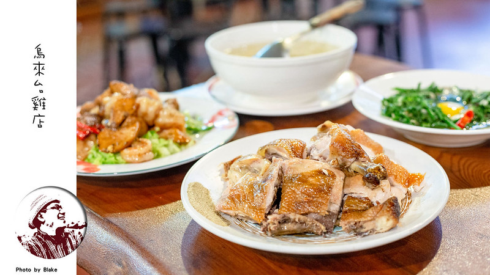

烏來台雞店
google評價：3.9★
店家資訊
地址：新北市烏來區新烏路四段1號
營業時間：早上11:00到晚上8:30
店家電話：02-2661-7711

推薦菜單
烤桶仔雞300元/550元 烤脆皮雞550元/300元
招牌三杯豆腐250元 金沙竹筍250元 招牌炸豆腐100元
珠蔥炒櫻花蝦220元 招牌沙鬆過貓200元 劍筍160元
鐵板紅蝦400元 鹽水沙蝦250元 招牌溪哥200元
狗尾草雞湯600元 金線蓮雞湯600元 香菇肉絲湯200元/300元
顧客評論
這家店位於新店和烏來交界處，而這家店就如其名一樣最有名的料理就是雞，烤桶仔雞可以一次點半隻，上桌的時候也會分切好不用自己去撕開，方便許多，外表看起來油亮亮的，雞皮烤到有一點酥脆感，而最外層的雞皮會有一股炭燒味，肉質軟嫩且帶有雞之感，沾點胡椒粉的話味道會更明顯。而其他菜就是熱炒店會出現的那種。